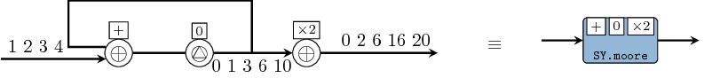

Overview

The ForSyDe-Atom project is a spin-off from the ForSyDe-Shallow library, which further explores the power of functional programming as a system design paradigm. It is a pure functional framework for describing, analyzing and simulating cyber-physical systems (CPS) as networks of processes communicating through signals, and makes heavy use of concepts like applicative functors and type classes.
Excerpt from Ungureanu and Sander, (2017):
Binding together concepts from a wide pool of formalisms this unified framework exhibits three essential properties:
- it slices processes in structured enclosing layers abstracting different behavioural aspects, as an embodiment of separation of concerns;
- it provides primitive, indivisible building blocks for each layer, named atoms, as the outcome of deconstructing the abstract semantics to their core;
- it describes composition in terms of patterns of building blocks, as a means of both modeling complex behavior within a layer, as well as abstracting it in a hierarchical manner. We demonstrate the potential for modeling, analysis and synthesis through a comprehensible example.

The layered process model.
Quick-start for the impatient
If you cannot wait to get your hands dirty with ForSyDe-Atom, follow the instructions below. Otherwise we do recommend you to take it easy and discover the full features of this EDSL.
Before you try anything, make sure you have Haskell Platform installed on your machine. Once this is done, get the forsyde-atom package through any means suit you best, e.g. by cloning the repository or by downloading and extracting one of the archives above.
Installing the package is as simple as typing in the terminal:
cd path/to/forsyde-atom
cabal install
You need to be patient until the installation finishes. Afterwards you can start a new interpreter session
ghci
and import the newly installed libraries and try them out
Prelude> import ForSyDe.Atom
Prelude ForSyDe.Atom> import ForSyDe.Atom.MoC.SY as SY
Prelude ForSyDe.Atom SY> let s = SY.signal [1..4]
Prelude ForSyDe.Atom SY> SY.moore11 (+) (*2) 0 s
{0,2,6,12,20}
The example above implements a Moore finite state machine that calculates the running sum and multiplies the output with 2. It instantiates the moore pattern with one input and one output (as seen below) with the synchronous (SY) MoC semantics using the SY.moore11 helper.

The atom pattern of a Moore state machine.
Documentation and resources
Here you can find links to further documentation resources:
-
The setup page contains detailed instructions on how to install and use the libraries.
-
The ForSyDe-Atom User Manual is a living document built mainly from the literate sources in the
forsyde-atomandforsyde-atom-examplesrepositories. -
Some scientific publications about ForSyDe-Atom.
-
The API documentation generated with Haddock.
-
The
forsyde-atom-examplesrepository contain examples and documented experients in form of Haskell packages with literate code.